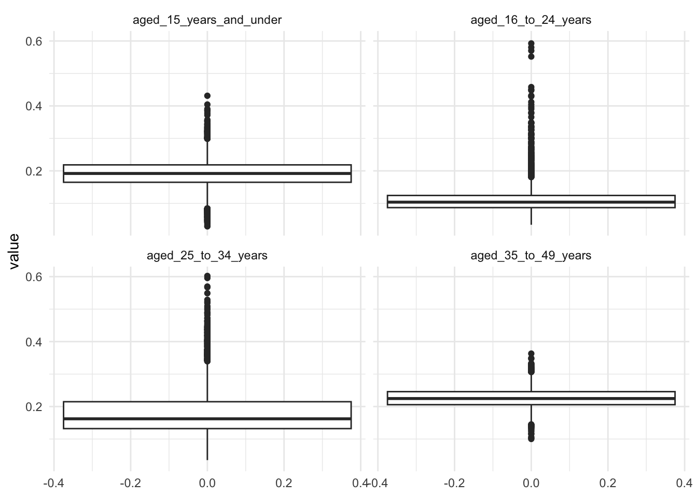

Geodemographic Classification
This week we will turn to geodemographic classification. Geodemographic classification is a method used to categorise geographic areas and the people living in them based on demographic, socioeconomic, and sometimes lifestyle characteristics. This approach combines geographic information with demographic data to create profiles of different neighborhoods.
Lecture slides
You can download the slides of this week’s lecture here: [Link].
Reading list
Essential readings
- Longley, P. A. 2012. Geodemographics and the practices of geographic information science. International Journal of Geographical Information Science 26(12): 2227-2237. [Link]
- Singleton, A. and Longley, P. A. 2024. Classifying and mapping residential structure through the London Output Area Classification. Environment and Planning B: Urban Analytics and City Science 51(5): 1153-1164. [Link]
- Wyszomierski, J., Longley, P. A., and Singleton, A. et al. 2024. A neighbourhood Output Area Classification from the 2021 and 2022 UK censuses. The Geographical Journal. 190(2): e12550. [Link]
Suggested readings
- Fränti, P. and Sieronoja, S. 2019. How much can k-means be improved by using better initialization and repeats? Pattern Recognition 93: 95-112. [Link]
- Singleton, A. and Spielman, S. 2014. The past, present, and future of geodemographic research in the United States and United Kingdom. The Professional Geographer 66(4): 558-567. [Link]
London Output Area Classification
Today, we will create our own geodemographic classification to examine demographic clusters across London. Specifically, we will focus on age group, self-identified ethnicity, and country of birth. Additionally, we will include data on an individual’s first or preferred language. The data represent all usual residents as recorded in the 2021 Census for England and Wales, and have been extracted using the Custom Dataset Tool.
You can download copies of each file via the links below. Save these files in your project folder under data.
| File | Type | Link |
|---|---|---|
| London LSOA Census 2021 Age Groups | csv |
Download |
| London LSOA Census 2021 Country of Birth | csv |
Download |
| London LSOA Census 2021 Ethnicity | csv |
Download |
| London LSOA Census 2021 Main Language | csv |
Download |
To download a csv file that is hosted on GitHub, click on the Download raw file button on the top right of your screen and it should download directly to your computer.
We will start by loading the libraries that we will need:
R code
# load libraries
library(tidyverse)
library(janitor)
library(tmap)Next, we can load the individual csv files into R.
R code
# load age data
lsoa_age <- read_csv('data/London-LSOA-AgeGroup.csv')Rows: 24970 Columns: 5
── Column specification ────────────────────────────────────────────────────────
Delimiter: ","
chr (3): Lower layer Super Output Areas Code, Lower layer Super Output Areas...
dbl (2): Age (5 categories) Code, Observation
ℹ Use `spec()` to retrieve the full column specification for this data.
ℹ Specify the column types or set `show_col_types = FALSE` to quiet this message.# load country of birth data
lsoa_cob <- read_csv('data/London-LSOA-Country-of-Birth.csv')Rows: 39952 Columns: 5
── Column specification ────────────────────────────────────────────────────────
Delimiter: ","
chr (3): Lower layer Super Output Areas Code, Lower layer Super Output Areas...
dbl (2): Country of birth (8 categories) Code, Observation
ℹ Use `spec()` to retrieve the full column specification for this data.
ℹ Specify the column types or set `show_col_types = FALSE` to quiet this message.# load ethnicity data
lsoa_eth <- read_csv('data/London-LSOA-Ethnicity.csv')Rows: 99880 Columns: 5
── Column specification ────────────────────────────────────────────────────────
Delimiter: ","
chr (3): Lower layer Super Output Areas Code, Lower layer Super Output Areas...
dbl (2): Ethnic group (20 categories) Code, Observation
ℹ Use `spec()` to retrieve the full column specification for this data.
ℹ Specify the column types or set `show_col_types = FALSE` to quiet this message.# load language data
lsoa_lan <- read_csv('data/London-LSOA-MainLanguage.csv')Rows: 54934 Columns: 5
── Column specification ────────────────────────────────────────────────────────
Delimiter: ","
chr (3): Lower layer Super Output Areas Code, Lower layer Super Output Areas...
dbl (2): Main language (11 categories) Code, Observation
ℹ Use `spec()` to retrieve the full column specification for this data.
ℹ Specify the column types or set `show_col_types = FALSE` to quiet this message.If using a Windows machine, you may need to substitute your forward-slashes (/) with two backslashes (\\) whenever you are dealing with file paths.
Let us have a look at the data:
R code
# inspect age data
head(lsoa_age)# A tibble: 6 × 5
Lower layer Super Output Areas…¹ Lower layer Super Ou…² Age (5 categories) C…³
<chr> <chr> <dbl>
1 E01000001 City of London 001A 1
2 E01000001 City of London 001A 2
3 E01000001 City of London 001A 3
4 E01000001 City of London 001A 4
5 E01000001 City of London 001A 5
6 E01000002 City of London 001B 1
# ℹ abbreviated names: ¹`Lower layer Super Output Areas Code`,
# ²`Lower layer Super Output Areas`, ³`Age (5 categories) Code`
# ℹ 2 more variables: `Age (5 categories)` <chr>, Observation <dbl># inspect country of birth data
head(lsoa_cob)# A tibble: 6 × 5
Lower layer Super Output Areas…¹ Lower layer Super Ou…² Country of birth (8 …³
<chr> <chr> <dbl>
1 E01000001 City of London 001A -8
2 E01000001 City of London 001A 1
3 E01000001 City of London 001A 2
4 E01000001 City of London 001A 3
5 E01000001 City of London 001A 4
6 E01000001 City of London 001A 5
# ℹ abbreviated names: ¹`Lower layer Super Output Areas Code`,
# ²`Lower layer Super Output Areas`, ³`Country of birth (8 categories) Code`
# ℹ 2 more variables: `Country of birth (8 categories)` <chr>,
# Observation <dbl># inspect ethnicity data
head(lsoa_eth)# A tibble: 6 × 5
Lower layer Super Output Areas…¹ Lower layer Super Ou…² Ethnic group (20 cat…³
<chr> <chr> <dbl>
1 E01000001 City of London 001A -8
2 E01000001 City of London 001A 1
3 E01000001 City of London 001A 2
4 E01000001 City of London 001A 3
5 E01000001 City of London 001A 4
6 E01000001 City of London 001A 5
# ℹ abbreviated names: ¹`Lower layer Super Output Areas Code`,
# ²`Lower layer Super Output Areas`, ³`Ethnic group (20 categories) Code`
# ℹ 2 more variables: `Ethnic group (20 categories)` <chr>, Observation <dbl># inspect language data
head(lsoa_lan)# A tibble: 6 × 5
Lower layer Super Output Areas…¹ Lower layer Super Ou…² Main language (11 ca…³
<chr> <chr> <dbl>
1 E01000001 City of London 001A -8
2 E01000001 City of London 001A 1
3 E01000001 City of London 001A 2
4 E01000001 City of London 001A 3
5 E01000001 City of London 001A 4
6 E01000001 City of London 001A 5
# ℹ abbreviated names: ¹`Lower layer Super Output Areas Code`,
# ²`Lower layer Super Output Areas`, ³`Main language (11 categories) Code`
# ℹ 2 more variables: `Main language (11 categories)` <chr>, Observation <dbl>You can further inspect the results using the View() function.
To identify geodemographic clusters in our dataset, we will use an unsupervised machine learning technique called \(k\)-means. \(k\)-means aims to partition a set of standardised observations into a specified number of clusters (\(k\)), where each observation is assigned to the cluster with the nearest mean. In this context, a cluster refers to a collection of data points grouped together based on certain similarities. To do this we first need to prepare the individual datasets, as well as transform and standardise the input variables.
Variable preparation
Because all the data are stored in long format, with each London LSOA having separate entries for each category, we need to transform it into a wide format. Additionally, we need to clean up the column names to align with general R naming conventions, which can be done using the janitor package.
We will begin with the age dataframe:
R code
# clean names
lsoa_age <- lsoa_age |>
clean_names()
# pivot
lsoa_age <- lsoa_age |>
pivot_wider(id_cols = 'lower_layer_super_output_areas_code',
names_from = 'age_5_categories',
values_from = 'observation')
# clean names
lsoa_age <- lsoa_age |>
clean_names()The code above uses a pipe function: |>. The pipe operator allows you to pass the output of one function directly into the next, streamlining your code. While it might seem a bit confusing at first, you will find that it makes your code faster to write and easier to read. More importantly, it reduces the need to create multiple intermediate variables to store outputs.
Be sure to inspect your dataframes between steps to understand exactly what the code is doing.
To account for the non-uniformity of the area units, we further need to convert the observations to percentages and only retain those columns that are likely to be meaningful in the context of the classification:
R code
# total observations
lsoa_age <- lsoa_age |>
rowwise() |>
mutate(age_pop = sum(across(2:6)))
# total proportions, select columns
lsoa_age <- lsoa_age |>
mutate(across(2:6, ~./age_pop)) |>
select(1:6)
# inspect
head(lsoa_age)# A tibble: 6 × 6
# Rowwise:
lower_layer_super_output_areas_code aged_15_years_and_un…¹ aged_16_to_24_years
<chr> <dbl> <dbl>
1 E01000001 0.0846 0.0744
2 E01000002 0.0621 0.0889
3 E01000003 0.0682 0.0706
4 E01000005 0.127 0.178
5 E01000006 0.224 0.120
6 E01000007 0.257 0.103
# ℹ abbreviated name: ¹aged_15_years_and_under
# ℹ 3 more variables: aged_25_to_34_years <dbl>, aged_35_to_49_years <dbl>,
# aged_50_years_and_over <dbl>This looks much better. We can do the same for the country of birth data:
R code
# prepare country of birth data
lsoa_cob <- lsoa_cob |>
clean_names() |>
pivot_wider(id_cols = "lower_layer_super_output_areas_code", names_from = "country_of_birth_8_categories",
values_from = "observation") |>
clean_names()
# proportions, select columns
lsoa_cob <- lsoa_cob |>
rowwise() |>
mutate(cob_pop = sum(across(2:9))) |>
mutate(across(2:9, ~./cob_pop)) |>
select(-2, -10)And we can do the same for the ethnicity and language datasets:
R code
# prepare ethnicity data
lsoa_eth <- lsoa_eth |>
clean_names() |>
pivot_wider(id_cols = 'lower_layer_super_output_areas_code',
names_from = 'ethnic_group_20_categories',
values_from = 'observation') |>
clean_names()
# proportions, select columns
lsoa_eth <- lsoa_eth |>
rowwise() |>
mutate(eth_pop = sum(across(2:21))) |>
mutate(across(2:21, ~ . / eth_pop )) |>
select(-2,-22)
# prepare language data
lsoa_lan <- lsoa_lan |>
clean_names() |>
pivot_wider(id_cols = 'lower_layer_super_output_areas_code',
names_from = 'main_language_11_categories',
values_from = 'observation') |>
clean_names()
# proportions, select columns
lsoa_lan <- lsoa_lan |>
rowwise() |>
mutate(lan_pop = sum(across(2:12))) |>
mutate(across(2:12, ~ . / lan_pop )) |>
select(-2,-11,-13)We now have four separate datasets, each containing the proportions of usual residents classified into different groups based on age, ethnicity, language, and country of birth.
Variable selection
Where we initially selected variables from different demographic domains, not all variables may be suitable for inclusion. Firstly, the variables need to exhibit sufficient heterogeneity to ensure they capture meaningful differences between observations. Secondly, variables should not be highly correlated with one another, as this redundancy can skew the clustering results. Ensuring acceptable correlation between variables helps maintain the diversity of information and improves the robustness of the clustering outcome.
Variable selection is often a time-consuming process that requires a combination of domain knowledge and more extensive exploratory analysis than is covered in this practical.
A straightforward yet effective method to examine the distribution of our variables is to create boxplots for each variable. This can be efficiently achieved by using facet_wrap() to generate a matrix of panels, allowing us to visualise all variables in a single view. For more details on facet_wrap(), you can refer to the ggplot2 documentation.
R code
# wide to long
lsoa_age_wd <- lsoa_age |>
pivot_longer(cols = c(2:5), names_to = "variable", values_to = "value")
# facet age
ggplot(lsoa_age_wd, aes(y = value)) + geom_boxplot() + facet_wrap(~variable, ncol = 2) +
theme_minimal()
age dataset.When repeating this process for the birth, ethnicity, and language variables, you will notice that some variables have a very limited distribution. Specifically, some variables may have a value of 0 for the majority of London LSOAs. As a rule of thumb, we will retain only those variables where at least 25% of the LSOAs have values different from 0.
This threshold of 25% is arbitrary, and in practice, more thorough consideration should be given when deciding whether to include or exclude a variable.
R code
# join
lsoa_df <- lsoa_age |>
left_join(lsoa_cob, by = "lower_layer_super_output_areas_code") |>
left_join(lsoa_eth, by = "lower_layer_super_output_areas_code") |>
left_join(lsoa_lan, by = "lower_layer_super_output_areas_code")
# proportion zeroes
zero_percentage <- apply(lsoa_df[2:41], 2, function(col) {
mean(col == 0)
})
# filter
idx <- which(zero_percentage > 0.25)
# subset
lsoa_df <- lsoa_df |>
select(-all_of(idx))Variable selection is often a time-consuming process that requires a combination of domain knowledge and more extensive exploratory analysis than is covered in this practical.
Variable standardisation
If the input data are heavily skewed or contain outliers, \(k\)-means may produce less meaningful clusters. While normality is not required, it has been common to do this nonetheless. More important is to standardise the input variables, especially when they are measured on different scales. This ensures that each variable contributes equally to the clustering process.
Since our variables are all expressed as proportions in this example, range standardisation is not technically required.
Assignment
The creation of a geodemographic classification is an iterative process. This typically includes adding or removing variables, adjusting the number of clusters, and grouping data in different ways to achieve the most meaningful segmentation. If you want to refine your clustering solution, you can re-run the analysis with different variables or cluster numbers by simply updating your code. However, automating parts of this process with a function would streamline the workflow and make it more efficient.
Try to create a simple R function that:
- Takes at least three arguments: a data frame containing the input data, the number of clusters you want, and a list of input variables.
- Executes a k-means clustering on the specified input variables and number of clusters.
- Generates a
csvfile that contains a table of means for each cluster in the solution.
- Your function could be structured like this:
run-kmeans(df, k, vars), wheredfis your input dataframe,kis the number of clusters, andvarsis a list of input variables. - For a more in-depth discussion on constructing functions in R, refer to Hadley Wickham’s R for Data Science Chapter on Functions.
Before you leave
Having finished this tutorial, you should now understand the basics of a geodemographic classification. In addition, you should now be able to write simple functions. That is all for this week!